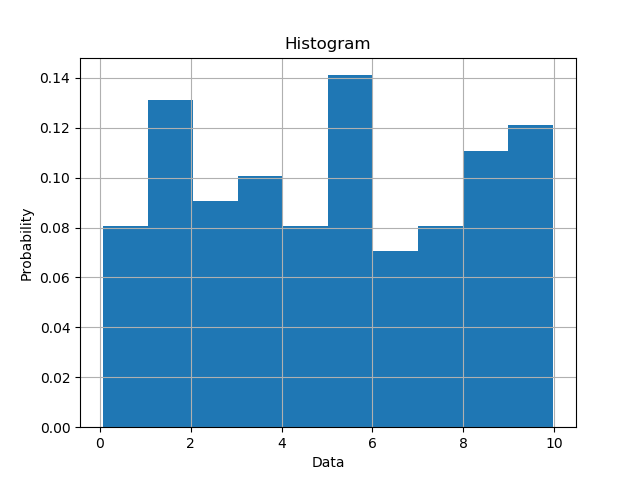

https://matplotlib.org/stable/api/_as_gen/matplotlib.pyplot.hist.html
https://matplotlib.org/stable/gallery/statistics/hist.html
Compute and draw the histogram of x. The return value is typically a tuple (n, bins, patches).
# matplotlib.pyplot.hist(x, bins=None, range=None, density=False, weights=None,
# cumulative=False, bottom=None, histtype='bar', align='mid',
# orientation='vertical', rwidth=None, log=False, color=None, label=None,
# stacked=False, *, data=None, **kwargs)
#
# x : input values, an array or a sequence of arrays
# bins : int or sequence or str (default: 10)
# range : tuple or None; the lower and upper range of the bins
# density : bool; if True then the area under the histogram will sum to 1
# histtype : {'bar', 'barstacked', 'step', 'stepfilled'}
# align : {'left', 'mid', 'right'}
# orientation : {'vertical', 'horizontal'}
# label : a string for the legend
# histogram1.py
import numpy as np
import matplotlib.pyplot as plt
x = np.random.uniform(0.0, 10.0, 100)
#plt.hist(x, bins=10)
plt.hist(x, bins=10, density=True)
# `density=False` (default) would make counts
plt.ylabel('Probability')
plt.xlabel('Data')
plt.title('Histogram')
plt.grid(True)
plt.show()
